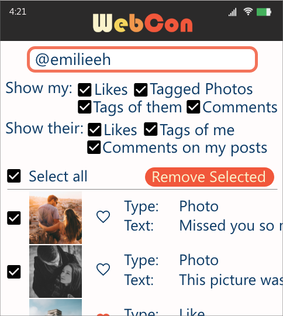
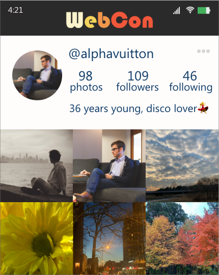
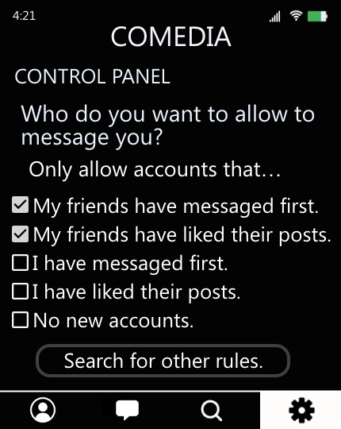
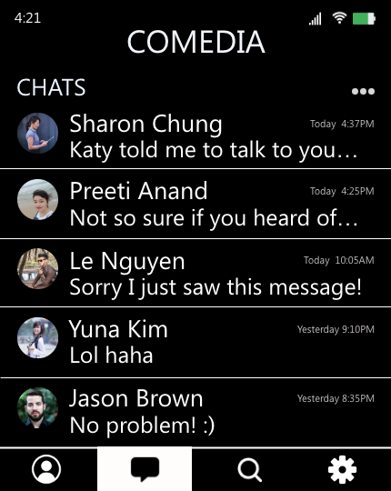

3) Examples
Here we provide tangible mockups that illustrate three examples suggested above. The first and second illustrations are designed by Katherine Mustelier and the third is made by Jane Im. 1. Voluntary Content Feeds: Feeds that ask what you want to see today/this week/this month
![The image shows a content feed of Socious, an imaginary social platform. At the top, the feed asks the user what they want to see this week, with a search bar for searching topics and some recommended topics right below the search bar. Below the search bar and recommendations, there are topics the user liked from last week, so the user can easily re-select them if they want to. Among the topics Lucy liked last week, which are Flowers, News in Korea, Volleyball, Slow Motion, etc., Lucy selected Flowers, Volleyball, and Slow Motion. At the very bottom, the user can select topics they want to filter out. There are currently Self Harm, Alt right, Race, Anime, etc. showed and Lucy selected Self Harm, Alt right, and Race.](images/socious-1.png)
![The image shows the feed reflecting the preferences of the user. The first post, written by an account with the username equalighte, says "I came to a flower festival today! Everyone should check it out!" which is related to the topic "Flower Trending." The second one, posted by liberati, says "I saw Howl's Moving Castle tonight and it was so beautiful...!" which is related to the topic "Animation." Lastly, the user secretdancer48 posted "It's been a week since I started to learn waltz. It's more difficult than I thought!" which is related to the topic "Dance."](images/socious-2.png)
When Lucy opens Socious, they are greeted within the content feed asking what they want to see this week.
Once Lucy selects the topics they want (or not want) to see, the changes are immediately reflected in the feed.
Current content feeds do not ask what a user wants to see; they typically assume what a user wants based on inference over platform data. As a result, many encounter unwanted posts in their feeds, sometimes even after the user has invested great effort to avoid such posts. A content feed constructed around the voluntary principle of affirmative consent would periodically ask what the user wants to see.
Imagine that Lucy logs onto a new platform called Socious, and the platform greets them by asking “What do you want to see this week?” Lucy sees Socious recommended keywords like “Flower Tending”, “Animation”, and “Dance” based on topic modeling. Lucy decides they would like to see more of flowers, dance, and animation. Lucy also notices they can specify topics they do not want to see. Lucy can also select among tags that include well-known triggering topics. Lucy selects “Self Harm”, “Alt Right,” and “Race” for exclusion from their feed. As Lucy scrolls down the feed, they see the new preferences immediately reflected. After a week, Socious asks Lucy again for topic preferences—though Lucy can change the frequency of requests any time.
Imagine that Lucy logs onto a new platform called Socious, and the platform greets them by asking “What do you want to see this week?” Lucy sees Socious recommended keywords like “Flower Tending”, “Animation”, and “Dance” based on topic modeling. Lucy decides they would like to see more of flowers, dance, and animation. Lucy also notices they can specify topics they do not want to see. Lucy can also select among tags that include well-known triggering topics. Lucy selects “Self Harm”, “Alt Right,” and “Race” for exclusion from their feed. As Lucy scrolls down the feed, they see the new preferences immediately reflected. After a week, Socious asks Lucy again for topic preferences—though Lucy can change the frequency of requests any time.
2. Revertible Profile Pages: Revert posts, comments, and tags efficiently


Jon’s profile page on WebCon.
Jon queries for posts containing tagged photos of Emily or ones that Emily left comments on or liked. Jon decides to delete all of them.
Jon goes back to his profile page and sees the queried posts removed from his profile.
Imagine Jon logged into WebCon, a new social platform. Jon recently went through a break-up, and wants to remove all data related to his ex-partner, Emily. Jon goes to the dashboard and queries for his posts that Emily liked, is tagged in, or left comments on, as well as Emily’s posts that he liked, is tagged in, or left comments on. He decides to delete all of his posts that are related to Emily. He also chooses to remove his likes, comments, and tags in/on Emily’s posts. Jon goes back to his profile page and sees these posts removed from his profile. Jon also deletes all of Emily’s comments in his remaining posts. In contrast, Jon cannot delete Emily’s posts of Jon, as those posts are Emily’s.
3. Unburdensome Messaging: Leverage network data to control chats



Sannvi sees many unwanted messages when she opens CoMedia.
Sannvi uses network rules to control who can message her.
Sannvi has the majority of her new messages sent to a separate queue. She also sees new messages from friends’ friends, Sharon and Preeti.
Imagine Sannvi has been receiving many unwanted messages on CoMedia. The messages often include compliments about her looks, which she finds uncomfortable. Sannvi decides she does not want to see such messages and goes to “Control Panel,” applying network-centric rules such as: Only allow people that my friends have messaged to message me. Now, if a stranger messages Sannvi on CoMedia, the system first looks up whether the sender has ever interacted with Sannvi or any of her friends on the platform. If not, CoMedia sends the stranger’s message to a separate queue which Sannvi can later review if she wants.